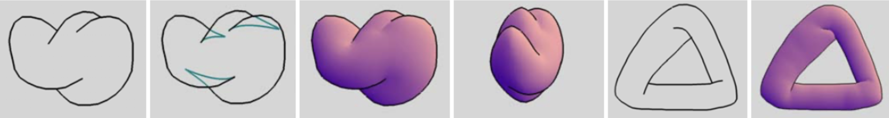
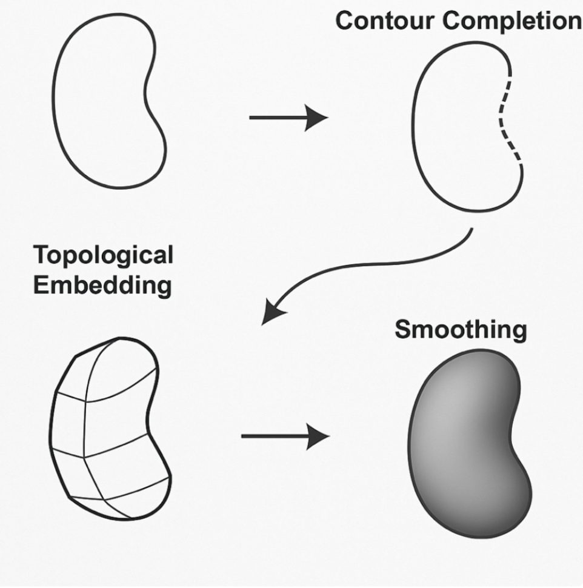

SmoothSketch: 2D-to-3D Freeform Shape Construction
https://tiwar081.github.io/cs184-FP/proposal/
Course: CS 184: Computer Graphics (Summer 2025)
Summary and Team Members
Team Members: Samyak Tiwari, Sufjan Fana, Meghai Choudhury, Echo Huang
Summary: Our project aims to implement the SmoothSketch pipeline for converting 2D contour drawings into 3D shapes, with a focus on visual fidelity, completeness, and performance. We will build a prototype that takes user-drawn or SVG contour images and outputs a 3D mesh, visualized from multiple angles. If time permits, we will extend our work to generate realistic images conditioned on text using deep learning models.
Problem Description
Our ultimate goal is to create 3D figures projected onto a 2D image plane from a contour drawing. Given a 2D sketch, either hand drawn or imported as an SVG, our system will infer the hidden structure, lift the drawing into 3D, and output a mesh that can be rendered from multiple viewpoints. Time permitting, we will use DeepFloyd or similar deep learning image generation models to condition the final image on a textual description. That is, we will pass the 3D result from SmoothSketch to DeepFloyd and have it produce a realistic image with the provided structure and user-supplied text prompt.
Goals and Deliverables
Baseline Plan: Replicate the paper 2D to 3D SmoothSketch
We aim to build a working prototype where the user inputs an image, either mouse drawn or an SVG file of a 2D contour. The final images (or gif) will consist of different angles of our newly constructed 3D shape.

This is the figure from the paper. The first and the fifth images are user inputs, while the third, fourth, and sixth images are the results. The second one is the intermediate step where we’ve added hidden contours to the existing ones.
Our project will:
- Complete contours by adding hidden contours to the visible ones
- Interpolate a surface in 3D by lifting the 2D drawing to a topological embedding
- Apply basic mesh smoothing to produce a final shape
Here is a simple example of what the images would look like after each step:

Details for each step are listed below:
- Contour completion
- Enumerate all possible endpoint pairs (tees/cusps).
- Compute the energy for each pair using the energy function from the paper:
Ecurve = e∑i li · ∑i Δθi
where li is the length of the i-th segment of the polyline, and Δθi is the absolute value of the angle change between two consecutive segments of the polyline.
- To find the curve between endpoints, we identify endpoints and their respective tangent vectors, then generate the connecting Bézier curve.
- Perform a branch-and-greedy search for the best global configuration:
- At each step, keep the Top-10 lowest-energy configurations as candidates,
- Expand them iteratively until all endpoints are paired and the overall Huffman labeling is valid.
- After all hidden contours are completed, assign Huffman labels to all edges (front, back, or occluding).
- Interpolate a surface in 3D by lifting the 2D drawing to a topological embedding
- Identify all closed regions (faces) from the completed, Huffman-labeled sketch.
- Triangulate each region using the Triangle algorithm to get a well-shaped initial mesh.
- Duplicate each face depending on its visibility (front/back layers).
- Glue the duplicated faces along their boundaries according to the Huffman labels
- Merge coincident boundary vertices into vertex clusters.
- Assign depth (z-values) to the vertices via a mass–spring relaxation model:
- Enforce the front/back ordering given by the Huffman labels,
- Spring forces separate layers along the z-axis, resulting in an abstract 3D shell.
- Apply basic mesh smoothing to produce a final shape
- Re-triangulate the mesh (using Triangle algorithm again) to improve triangle quality.
- Apply Taubin λ/μ smoothing to remove sharp creases while avoiding global shrinkage.
- Inflate the surface using a mass–spring system:
- Length springs preserve edge lengths to prevent excessive distortion,
- Pressure springs push faces outward along their normals, simulating a balloon inflating under pressure.
Completion Metrics
- Visual fidelity – does the 3D shape “match” the drawing?
- Completeness – what is the percentage of test cases where our project successfully infers a surface without failure?
- Performance – how long does it take for our project to run each part (contour completion, lifting, smoothing)?
For the live in-class presentation, we plan on giving a demo where we create the 2D image either using a mousepad or have a premade contour image using Figma pen tool, then run our program and an OpenGL interface opens with a rotatable 3D object.
Aspirational Plan
If things go well and ahead of schedule, we aspire to add the following extensions to our project:
- Use computer vision techniques and deep learning to create a realistic rendering of our final 3D object with input text. For example, the user draws a 2D apple and inputs the term “apple.” Then our project first makes it into a 3D object as described, and then outputs a realistic model of an apple using a deep learning image generation tool (like ChatGPT, Gemini, or more challengingly, DeepFloyd IF).
- Add different colors (solid colors or gradients), textures (a roughness or reflective slider), and shaders (glass/refraction, toon shading, or Blinn-Phong shading) to our final 3D object that the user can switch between.
- Allow the user to adjust the light source (color and direction)
Schedule
- Week 1 (July 27 - August 2):
- Samyak: Set up input pipeline for user-drawn contours and SVG uploads. Handle basic file parsing and sketch canvas.
- Meghai: Implement endpoint and tangent detection. Begin Bézier curve generation between candidate endpoints.
- Echo: Implement energy function for contour completion based on length and curvature. Start global search for low-energy contour configurations.
- Sufjan: Assign Huffman labels to contour edges (front, back, occluding). Inspect label results with visual debugger
- Week 2 (August 2 - August 9):
- Samyak: Detect closed regions and triangulate using the Triangle algorithm. Handle layer duplication for front/back faces.
- Meghai: Implement vertex clustering and boundary gluing according to labels.
- Echo: Develop mass–spring model for z-lifting and apply depth values across mesh.
- Sufjan: Integrate OpenGL interface to visualize rotatable 3D output. Add early support for toggling mesh layers and views.
- Week 3 (August 10 - August 12):
- Samyak: Finalize user interface, handle edge cases, and improve stability of input parsing.
- Meghai: Apply Taubin smoothing and mesh inflation. Tune spring parameters for visual realism.
- Echo: Prepare clean demo inputs, export rotating .gif outputs, and evaluate performance across test cases.
- Sufjan: Polish OpenGL view with camera controls and lighting. Prepare final slide deck and format live demo walkthrough.
Resources